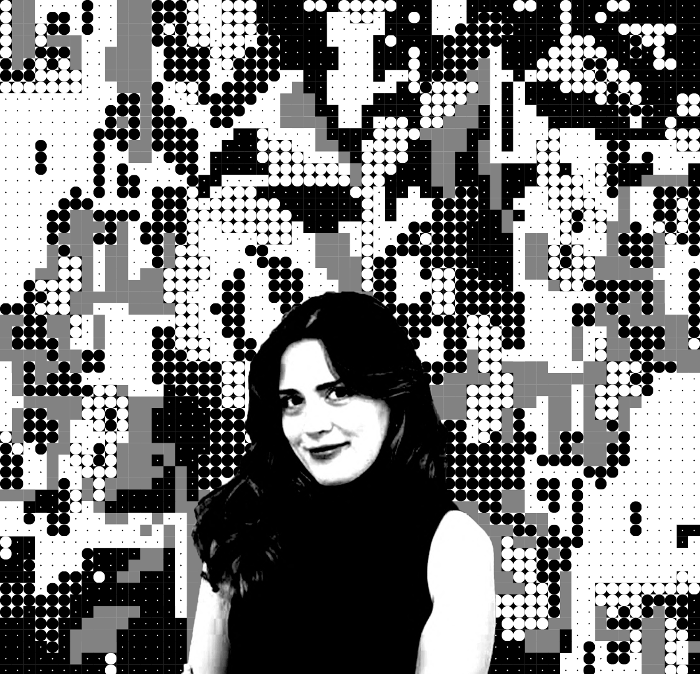

PORTFOLIO
Ayse Arya Vilgenoglu
Architect - Designer [MSc Student at Simon Fraser University]
Visit my [behance] link!
"I am a Graduate Student in Interactive Arts & Technology (SIAT) at Simon Fraser University, transitioning my deep expertise in architecture and spatial design into the field of UX Design. My background in computational design and architecture has trained me to think systemically about how people interact with environments. Now, I am leveraging software development and graphic computing to translate these principles into the digital realm. I aim to create intuitive, human-centered digital experiences that are as structurally sound as they are visually compelling. I am currently honing my skills in web technologies to build professional, interactive prototypes and data-driven visualizations."
Education
- MSc, Simon Fraser University (SFU), 2026- Present
- BSc, Izmir Institute of Technology (IZTECH), 2018- 2024
Experiences
1.Zechner & Zechner ZT GmbH, Austria, Vienna
(Long Term Erasmus Intern, Sep 2024 – July 2025 )
Visit [zechner.com]!Contributed to architectural, interior, and urban design projects through 2D drawings, 3D modelling, isometric diagrams, physical models, and design documentation. Assisted in concept and schematic design phases, producing diagrams, spatial studies, and massing analyses using Rhino, Grasshopper, AutoCAD, Revit, and Adobe Suite. Prepared publication-ready drawings and visual materials for internal reviews and client presentations. Developed physical models and visual communication material for multiple competition entries. Strengthened knowledge of building structures, construction detailing, workflows, and interdisciplinary coordination within a professional office environment.
Viven Life, Türkiye, Izmir
(Construction Intern, Feb 2023 – March 2023)
Visit [viven.com]!Completed on-site safety training and gained familiarity with OHS procedures. Assisted the site engineer in daily inspections and workflow coordination on a 14-storey project. Identified and repaired suspended ceiling issues; conducted basic quality checks. Observed crane and machinery operations during material lifting and coordination tasks.
Hellenic Foundation for European & Foreign Policy- Homeacross Project, Türkiye, Izmir
Research Contribution, ERC Horizon 2020 – Population Exchange Spatial Documentation Project, Nov 2022 – Jan 2023
Visit [eliamep.gr]!Participated in the production of a detailed physical model of a historical section of Urla, representing pre-fire urban fabric and architectural heritage lost after the Great Fire of Izmir. Assisted throughout all stages of the model-making workflow in AR201 Studio, including the interpretation of archival materials, the construction of buildings based on outputs provided by supervising researchers, and the coordination of fabrication and assembly processes. Contributed to the reconstruction and visualization of cultural memory by helping translate archival, spatial, and historical data into a tangible model.
Ozean Horizont, Neu- Isenburg, Germany
Architecture Summer Intern, Sep 2021 – Oct 2021
Visit [oh-projekt.com]!Worked alongside engineers in a technical office environment on project coordination and documentation. Supported site inspections and integrated technical calculations into architectural plans. Prepared and updated municipal application drawings and conducted measured surveys (rölöve) for renovation projects.